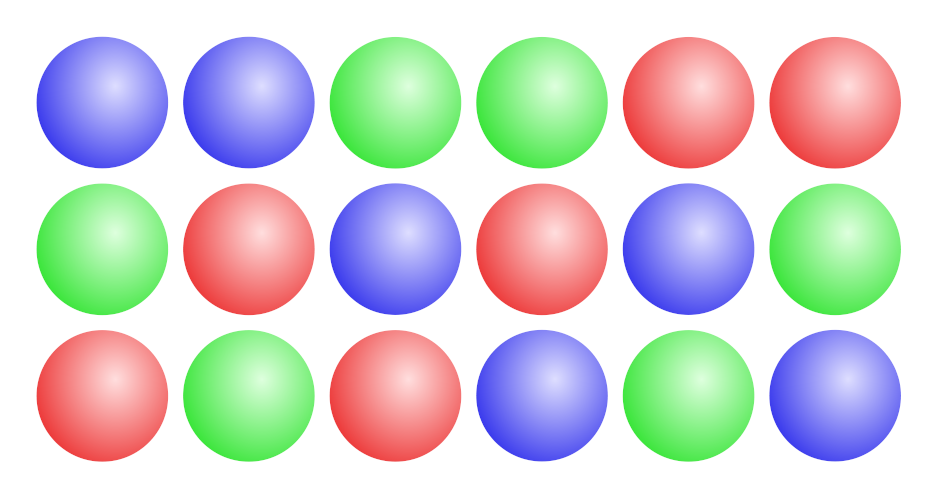
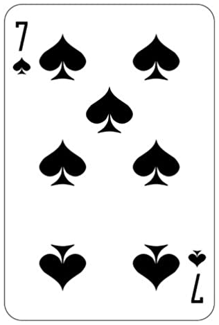
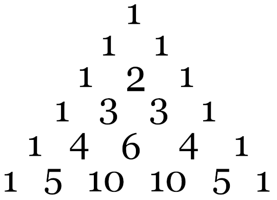
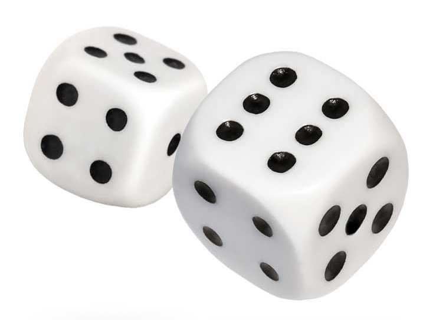
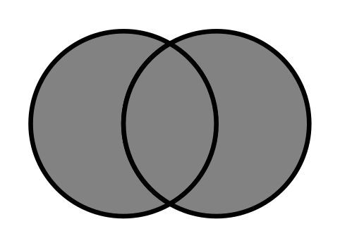
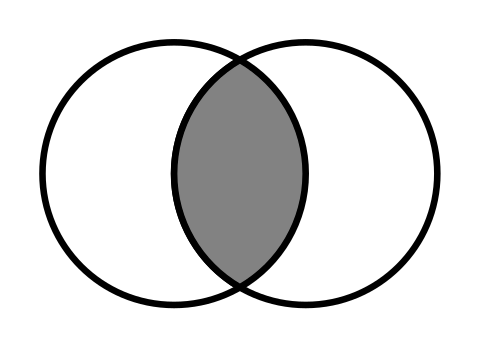
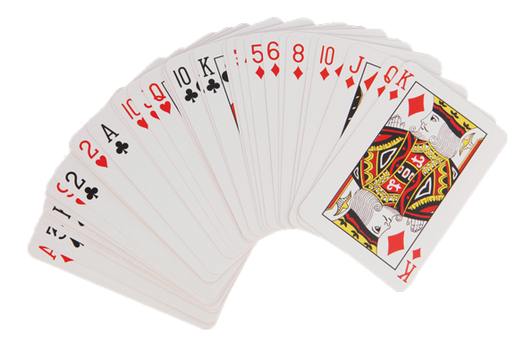

Table of Contents
13. Combinatorics and Probability
13.1. Combinatorics
13.1.1. Counting Rules and Techniques
13.1.2. Permutations
13.1.3. Permutations of Distinguishable Objects
13.1.4. Permutations of Nondistinguishable Objects
13.1.5. Combinations
13.2. The Binomial Theorem
13.2.1. Binomial Expansions and Pascal's Triangle
13.2.2. Binomial Expansion and Factorial Notation
13.2.3. Finding a Specific Term
13.3. Probability
13.3.1. Fundamentals of Probability
13.3.2. Unions and Intersections
13.3.3. Conditional Probability
13.3.4. Complementary Events
13.3.5. The Addition Rule
13.3.6. The Multiplication Rule
13.3.7. Independence
13.3.8. Experimental Probabilities
13. Combinatorics and Probability
13.1. Combinatorics
13.1.1. Counting Rules and Techniques
Combinatorics is a branch of mathematics concerning the study of finite or countable discrete structures.
Learning Objective
Describe the different rules and properties for combinatorics
Key Points
- The rule of sum (addition rule), rule of product (multiplication rule), and inclusion-exclusion principle are often used for enumerative purposes.
- Bijective proofs are utilized to demonstrate that two sets have the same number of elements.
- Double counting is a technique used to demonstrate that two expressions are equal. The pigeonhole principle often ascertains the existence of something or is used to determine the minimum or maximum number of something in a discrete context.
- Generating functions and recurrence relations are powerful tools that can be used to manipulate sequences, and can describe if not resolve many combinatorial situations.
- Double counting is a technique used to demonstrate that two expressions are equal.
Key Terms
- polynomial
- An expression consisting of a sum of a finite number of terms: each term being the product of a constant coefficient and one or more variables raised to a non-negative integer power.
- combinatorics
- A branch of mathematics that studies (usually finite) collections of objects that satisfy specified criteria.
Combinatorics is a branch of mathematics concerning the study of finite or countable discrete structures. Combinatorial techniques are applicable to many areas of mathematics, and a knowledge of combinatorics is necessary to build a solid command of statistics. It involves the enumeration, combination, and permutation of sets of elements and the mathematical relations that characterize their properties.
Aspects of combinatorics include: counting the structures of a given kind and size, deciding when certain criteria can be met, and constructing and analyzing objects meeting the criteria. Aspects also include finding "largest," "smallest," or "optimal" objects, studying combinatorial structures arising in an algebraic context, or applying algebraic techniques to combinatorial problems.
Combinatorial Rules and Techniques
Several useful combinatorial rules or combinatorial principles are commonly recognized and used. Each of these principles is used for a specific purpose. The rule of sum (addition rule), rule of product (multiplication rule), and inclusion-exclusion principle are often used for enumerative purposes. Bijective proofs are utilized to demonstrate that two sets have the same number of elements. Double counting is a method of showing that two expressions are equal. The pigeonhole principle often ascertains the existence of something or is used to determine the minimum or maximum number of something in a discrete context. Generating functions and recurrence relations are powerful tools that can be used to manipulate sequences, and can describe if not resolve many combinatorial situations. Each of these techniques is described in greater detail below.
Rule of Sum
The rule of sum is an intuitive principle stating that if there are $a$ possible ways to do something, and $b$ possible ways to do another thing, and the two things can't both be done, then there are $a + b$ total possible ways to do one of the things. More formally, the sum of the sizes of two disjoint sets is equal to the size of the union of these sets.
Rule of Product
The rule of product is another intuitive principle stating that if there are $a$ ways to do something and $b$ ways to do another thing, then there are $a \cdot b$ ways to do both things.
Inclusion-Exclusion Principle
The inclusion-exclusion principle is a counting technique that is used to obtain the number of elements in a union of multiple sets. This counting method ensures that elements that are present in more than one set in the union are not counted more than once. It considers the size of each set and the size of the intersections of the sets. The smallest example is when there are two sets: the number of elements in the union of $A$ and $B$ is equal to the sum of the number of elements in $A$ and $B$ , minus the number of elements in their intersection. See the diagram below for an example with three sets.
Bijective Proof
A bijective proof is a proof technique that finds a bijective function $f: A \rightarrow B$ between two finite sets $A$ and $B$ , which proves that they have the same number of elements, $|A| = |B|$ . A bijective function is one in which there is a one-to-one correspondence between the elements of two sets. In other words, each element in set $B$ is paired with exactly one element in set $A$ . This technique is useful if we wish to know the size of $A$ , but can find no direct way of counting its elements. If $B$ is more easily countable, establishing a bijection from $A$ to $B$ solves the problem.
Double Counting
Double counting is a combinatorial proof technique for showing that two expressions are equal. This is done by demonstrating that the two expressions are two different ways of counting the size of one set. In this technique, a finite set $X$ is described from two perspectives, leading to two distinct expressions for the size of the set. Since both expressions equal the size of the same set, they equal each other.
Pigeonhole Principle
The pigeonhole principle states that if $a$ items are each put into one of $b$ boxes, where $a>b$ , then at least one of the boxes contains more than one item. This principle allows one to demonstrate the existence of some element in a set with some specific properties. For example, consider a set of three gloves. In such a set, there must be either two left gloves or two right gloves (or three of left or right). This is an application of the pigeonhole principle that yields information about the properties of the gloves in the set.
Generating Function
Generating functions can be thought of as polynomials with infinitely many terms whose coefficients correspond to the terms of a sequence. The (ordinary) generating function of a sequence $a_n$ is given by:
$\displaystyle f(x) = \sum_{n=0}^{\infty} a_{n}x^{n}$
whose coefficients give the sequence $\left \{ a_{0}, a_{1}, a_{2}, ... \right \}$ .
Recurrence Relation
A recurrence relation defines each term of a sequence in terms of the preceding terms. In other words, once one or more initial terms are given, each of the following terms of the sequence is a function of the preceding terms.
The Fibonacci sequence is one example of a recurrence relation. Each term of the Fibonacci sequence is given by $F_{n} = F_{n-1} + F_{n-2}$ , with initial values $F_{0}=0$ and $F_{1}=1$ . Thus, the sequence of Fibonacci numbers begins:
13.1.2. Permutations
A permutation of a set of objects is an arrangement of those objects in a particular order; the number of permutations can be counted.
Learning Objective
Calculate the number of arrangements of ordered objects using permutations
Key Points
- Informally, a permutation of a set of objects is an arrangement of those objects into a particular order. For example, there are six permutations of the set ${1,2,3}$ , namely $(1,2,3)$ , $(1,3,2)$ ,$(2,1,3)$ , $(2,3,1)$ , $(3,1,2)$ , and $(3,2,1)$ .
- The number of permutations of $n$ distinct objects is $n \cdot (n - 1) \cdot (n - 2) \cdots 2 \cdot 1$ . This is called $n$ factorial, and written $n!$ .
- When deciding permutations of a subset from a larger set, it is often useful to divide one factorial by another to determine the number of permutations possible. For example, the first six cards from a deck of cards would have $\frac {52!}{46! }$ permutations possible, or about 14.7 billion.
Key Terms
- factorial
- The result of multiplying a given number of consecutive integers from
$1$ to the given number. In equations, it is symbolized by an exclamation mark ($!$ ). For example,$5! = 1 \cdot 2 \cdot 3 \cdot 4 \cdot 5 = 120$ . - permutation
- An ordering of a finite set of distinct elements.
Permutations
A permutation of a set of objects is an arrangement of those objects into a particular order. For example, there are six permutations of the set ${1,2,3}$ : $(1,2,3)$ , $(1,3,2)$ , $(2,1,3)$ , $(2,3,1)$ , $(3,1,2)$ , and $(3,2,1)$ . One might define an anagram of a word as a permutation of its letters.
{kind=link}
If one has three different colored balls, there are six distinct ways to order them, as shown. These six distinct orderings are as follows: red-green-blue, red-blue-green, green-red-blue, green-blue-red, blue-red-green, and blue-green-red.
The number of permutations of $n$ distinct objects is given by:
$\displaystyle n \cdot (n - 1) \cdot (n - 2) \cdots 2 \cdot 1$
This is called $n$ factorial and is written $n!$ .
In other words, a factorial is to multiply all the numbers from $1$ up to this number. So $5!$ means $1 \cdot 2 \cdot 3 \cdot 4 \cdot 5 = 120$ . Thus, $120$ is the number of permutations possible for a set of five distinct objects.
Example
In the game of Solitaire, seven cards are dealt out at the beginning: one face-up, and the other six face-down. A complete card deck has $52$ cards. Assuming that the only card that is seen is the $7$ of spades, how many possible "hands" (the other six cards) can be underneath? What makes this a permutation problem is that the order matters: if an ace is hiding somewhere in those six cards, it makes a difference whether the ace is on the first position, the second, etc. Permutation problems can always be addressed as an example of the multiplication rule, with one small twist.
{kind=link}
To find out how many possible combinations of cards there are below the seven of spades, we use the concept of permutations to calculate the possible arrangements of cards.
How many cards might be in the first position, directly under the showing $7$ ? The answer is 51. That card can be anything except the $7$ of spades.
If any given card is in the first position, how many cards might be in second position? The answer is $50$ . The seven of spades and the next card have both been dealt. So there are possible cards left for the second position.
So how many possibilities are there for the first two positions combined? The answer is $51 \cdot 50$ .
How many possibilities are there for all six positions? The answer is $51 \cdot 50 \cdot 49 \cdot 48 \cdot 47 \cdot 46$ , or approximately $1.3 \cdot 10^{10}$ ; about $13$ billion possibilities!
This result can be expressed more concisely by using factorials.
Note that $\frac {7!}{5! }$ can also be written as $\frac {1\cdot 2\cdot 3\cdot 4\cdot 5\cdot 6\cdot 7}{1\cdot 2\cdot 3\cdot 4\cdot 5}$ . Most of the terms cancel, leaving only $67=42$ .
Consider another example, $\frac {51!}{45! }$ . If all of the terms are written out, the first $45$ terms cancel, leaving $46 \cdot 47 \cdot 48 \cdot 49 \cdot 50 \cdot 51$ in the numerator. Instead of typing into a calculator six numbers to multiply, or sixty numbers or six hundred depending on the problem, the answer to a permutation problem can be found by dividing two factorials. In many calculators, the factorial option is located under the "probability" menu for this reason.
General Considerations
In mathematics, the notion of permutation is used with several slightly different meanings, all related to the act of permuting (rearranging) objects or values. Informally, a permutation of a set of objects is an arrangement of those objects into a particular order. The study of permutations generally belongs to the field of combinatorics.
Permutations occur, in more or less prominent ways, in almost every domain of mathematics. They often arise when different orderings on certain finite sets are considered, possibly only because one wants to ignore such orderings and needs to know how many configurations are thus identified. For similar reasons, permutations arise in the study of sorting algorithms in computer science.
13.1.3. Permutations of Distinguishable Objects
The number of permutations of distinct elements can be calculated when not all elements from a given set are used.
Learning Objective
Calculate the number of permutations of
Key Points
- If all objects in consideration are distinct, they can be arranged in $n!$ permutations, where $n$ represents the number of objects.
- If not all the objects in a set of $n$ unique elements are chosen, the above formula can be modified to: $\displaystyle \frac {n!}{(n-k)! }$ , where $k$ represents the number of selected elements.
- When solving for quotients of factorials, the terms of the denominator can cancel with the terms of the numerator, thus eliminating perhaps the majority of terms to be multiplied.
Key Terms
- permutation
- An ordering of a finite set of distinct elements.
- factorial
- The result of multiplying a given number of consecutive integers from
$1$ to the given number. In equations, it is symbolized by an exclamation mark ($!$ ). For example,$5! = 1 \cdot 2 \cdot 3 \cdot 4 \cdot 5 = 120$ .
Recall that, if all objects in a set are distinct, then they can be arranged in $n!$ possible permutations, where $n$ represents the number of objects. The quantity $n!$ is given by:
It is easy enough to use this formula to count the number of possible permutations of a set of distinct objects; for example, the number of permutations of three differently-colored balls. However, consider a situation where not all of the elements in a set of distinct objects are used in each permutation. For example, what if $7$ cards are chosen from among a full deck of $52$ ? In this case, not all of the cards from the deck are chosen for each possible permutation. There exists a formula for solving permutation problems such as this one, which would otherwise be nearly impossible to determine.
Permutations of a Partial Set
If not all of the objects in a set of unique elements are chosen, the following formula is used. This formula determines the number of possible permutations of $k$ elements selected from the set of $n$ elements:
To understand the application of this concept, consider a race in which $3$ different prizes are awarded to the top $3$ fastest competitors. If $25$ competitors participate in the race, in how many distinct orders could the $3$ prizes be awarded?
To solve this problem, we want to evaluate the number of possible permutations of $3$ elements from the set of $25$ elements; in other words, $k = 3$ and $n=25$ . Plugging these values into the formula, we have:
Remember that both $25!$ and $22!$ contain the terms $22 \cdot 21 \cdots 2 \cdot 1$ . Thus, these values cancel from the numerator and denominator, and the equation can be simplified:
There are $13,800$ possible permutations in which the $3$ top prizes may be awarded to the $25$ race competitors.
General Considerations
It is worth noting that this formula does not exclude what we might call 'duplicate' permutations. In other words, the order of the elements selected does matter. Consider $3$ cards drawn from a pack: an ace of spades, a $10$ of diamonds, and a $3$ of clubs. The hand is exactly the same as the following: a $10$ of diamonds, an ace of spaces and a $3$ of clubs. If you are playing a game in which the order of your cards does not matter, you will only want to count each permutation of cards once. The formula introduced here does not apply to such situations.
13.1.4. Permutations of Nondistinguishable Objects
The expression revealing the number of permutations of distinct items can be modified if not all items in the set are distinct.
Learning Objective
Calculate the number of permutations of a given set of objects, some being nondistinguishable
Key Points
- Some sets include repetitions of certain elements. In these cases, the number of possible permutations of the items cannot be expressed by $n!$ , where $n$ represents the number of elements, because this calculation would include a multiplicity of possible states.
- To correct for the multiplicity of certain permutations, divide the factorial of the total number of elements by the product of the factorials of the number of each repeated element.
- The expression for number of permutations with repeated elements is: $\frac {n!}{n_1!n_2!n_3!... }$ where $n$ is the total number of terms in a sequence and $n_1$ , $n_2$ , and $n_3$ are the number of repetitions of different elements.
Key Terms
- multiplicity
- The number of values for which a given condition holds.
- permutation
- An ordering of a finite set of distinct elements.
Recall that the number of possible permutations of a set of $n$ distinct elements is given by $n!$ :
This can be easily tested. The number $1$ can be arranged in just one $1!$ way. The numbers $1$ and $2$ can be arranged in two $2!$ ways: $(1,2)$ and $(2,1)$ . The numbers $1$ , $2$ , and $3$ can be arranged in $3!$ ways: $(1,2,3)$ , $(1,3,2)$ , $(2,1,3)$ , $(2,3,1)$ , $(3,1,2)$ , and $(3,2,1)$ . This rule holds true for sets of any size, so long as the elements are all distinct. But what if some elements are repeated?
Repetition of some elements complicates the calculation of permutations, because it allows for there to be multiple ways in which a specific order of elements can be arranged. For example, given the numbers $1$ , $3$ , and $3$ in a set, there are 2 ways to obtain the order $(3,1,3)$ .
To correct for the "multiplicity" of certain permutations, we must divide the factorial of the total number of elements by the product of the factorials of the number of each repeated element. This can generally be represented as:
Where $n$ is the total number of terms in a sequence, and $n_1$ , $n_2$ , and $n_3$ represent the number of repetitions of different elements.
To understand why we would divide by the number of repetitions, consider that $2$ elements can be arranged in a total of $2!$ distinct ways, $3$ elements can be arranged in a total of $3!$ distinct ways, and so on. When we encounter multiplicity in a permutation, we must account for it by dividing these possible arrangements out of the total number of permutations that would be possible if all of the elements were distinct.
Example: Consider the set of numbers:
$\displaystyle (15, 17, 24, 24, 28)$
There are five terms, so $n=5$ . However, two of the terms are the same; their value is $24$ . Thus, the number of possible distinct permutations in the set is:
The same logic can apply to more complicated systems.
Example: Consider the set:
In total, there are $13$ elements. These include many repetitions: $0$ is seen 3 times, $4$ and $8$ each are observed twice, and there are $5$ instances of the number $7$ . Thus, the number of possible distinct permutations can be calculated by:
This logic can be applied to problems involving anagrams of given words.
Example: Consider how many distinct ways you can order the letters of the word "waterfall."
The word waterfall consists of $9$ letters in total, so $n=9$ . The letter "a" appears twice, giving a value of $2$ for $n_{1}$ . Similarly, the letter "l" appears twice, yielding $n_{2} = 2$ . Thus, the number of distinct permutations for the letters in "waterfall" can be calculated as:
13.1.5. Combinations
A combination is a way of selecting several things out of a larger group, where (unlike permutations) order does not matter.
Learning Objective
Calculate the number of ways of selecting several things out of a larger group (where order doesn't matter) using combinations
Key Points
- A combination is a mathematical concept where one counts the number of ways one can select several elements out of a larger group.
- Unlike a permutation, when determining the number of combinations, order does not matter.
- Formally, a $k$ -combination of a set $S$ is a subset of $k$ distinct elements of $S$ . If the set has $n$ elements the number of $k$ -combinations is equal to the binomial coefficient: $\begin{pmatrix} n\\ k \end{pmatrix} = \frac {n(n-1)...(n-k+1)}{k(k-1)...1}$ , which can be written using factorials as $\frac {n!}{k!(n-k)! }$ whenever $k \le n$ and which is zero when $k > n$ .
Key Terms
- binomial coefficient
- A coefficient of any of the terms in the expansion of the binomial power
$(1+x)^n$ . - combination
- A way of selecting elements from a set, where order does not matter.
In mathematics, a combination is a way of selecting several things out of a larger group, where (unlike permutations) order does not matter. In smaller cases, it is possible to count the number of combinations. For example, given $3$ pieces of fruit: an apple, an orange and a pear. There are $3$ combinations of $2$ that can be drawn from this set: an apple and a pear, an apple and an orange, or a pear and an orange.
Combinations can refer to the combination of $n$ things taken $k$ at a time with or without repetition. In the above example, repetition was not allowed. If, however, it was possible to have $2$ of any $1$ kind of fruit there would be $3$ more combinations: $2$ apples, $2$ oranges, and $2$ pears.
To understand the difference between a permutation and combination, consider a deck of $52$ cards, from which a poker hand ($5$ cards) is dealt. How many possible poker hands are there?
At first glance, this may seem like a permutation question, where one might consider how many distinct ways there are to make a stack of cards. However, there is one important difference: order does not matter in this problem. When dealt a poker hand during a game, order does not matter so you will have the same hand regardless of the order in which the cards are dealt. Combination problems involve such scenarios.
To approach such a question, begin with the permutations: how many possible poker hands are there, if order does matter?
Recall the permutation formula: $\displaystyle{\frac{n!}{(n-k)!}}$ , where $n$ is the number of distinct objects in the set, and $k$ is the number of objects selected. In this case, we can calculate the number of permutations as:
$$ $\displaystyle \begin{align} \frac{52!}{(52-5)!}&=\frac{52!}{47!}\\ &=52 \cdot 51 \cdot 50 \cdot 49 \cdot 48 \end{align}$
This yields approximately $311.9$ million possible poker hands. However, one has to count every possible hand many different times in this calculation. How many different times is one counting each distinct hand?
The key insight is that this second question—"How many different times is one counting each distinct hand?" is itself a permutation question. It is the same as the question "How many different ways can these five cards be rearranged in a hand?" There are $5$ possibilities for the first card, $4$ for the second, and so on. The answer is $5!$ , which is $120$ . So, since every possible hand has been counted $120$ times, divide our earlier result by $120$ to find that there are $\frac {52!}{(47!)(5! )}$ , or about $2.6$ million possible poker hands.
Combinations turn out to have a surprisingly large number of applications. Consider the following questions:
- A school offers $50$ classes. Each student must choose $6$ of them to fill out a schedule. How many possible schedules can be made?
- A basketball team has $12$ players, but only $5$ will start. How many possible starting teams can they field?
- Your computer contains $300$ videos, but you can only fit $10$ of them on your phone. How many possible ways can you load your phone?
Each of these is a combinations question, and can be answered exactly like the card scenario. Since this type of question comes up in so many different contexts, it is given a special name and symbol. The last question would be referred to as "$300$ choose $10$ " and written $\begin{pmatrix} 300\\ 10 \end{pmatrix}$ . It is calculated as $\frac {300!}{(290!)(10! )}$ , for reasons explained above.
Each possible combination of $k$ distinct elements of a set $S$ is known as a $k$ -combination. If the set has $n$ elements, the number of $k$ -combinations is equal to
$\begin{pmatrix} n\\ k \end{pmatrix} = \dfrac {n(n-1)...(n-k+1)}{k(k-1)...1}$
Which can be written using factorials as
$\dfrac {n!}{k!(n-k)! }$
Whenever $k \leq n$ , and which is zero when $k > n$ . The set of all $k$ -combinations of a set $S$ is often denoted by $\begin{pmatrix} S \\ k \end{pmatrix}$ , which is read as "$S$ choose $k$ ," such as in the phone example above. The set of $k$ -combinations may also be denoted in certain texts by $C(n,k)$ , or by a variation such as $C_k^n$ , $_nC_k$ , or $^nC_k$ .
General Considerations
The number of $k$ -combinations, or $\begin{pmatrix} S \\ k \end{pmatrix}$ , is also known as the binomial coefficient, because it occurs as a coefficient in the binomial formula. The binomial coefficient is the coefficient of the $x^k$ term in the polynomial expansion of $(1+x)^n$ . $$
13.2. The Binomial Theorem
13.2.1. Binomial Expansions and Pascal's Triangle
The binomial theorem, which uses Pascal's triangles to determine coefficients, describes the algebraic expansion of powers of a binomial.
Learning Objective
Use the Binomial Formula and Pascal's Triangle to expand a binomial raised to a power and find the coefficients of a binomial expansion
Key Points
- According to the theorem, it is possible to expand the power $(x + y)^n$ into a sum involving terms of the form $ax^by^c$ , where the exponents $b$ and $c$ are nonnegative integers with $b+c=n$ , and the coefficient $a$ of each term is a specific positive integer depending on $n$ and $b$ .
- Using summation notation, the binomial theorem can be expressed as: ${ (x+y) }^{ n }=\sum _{ k=0 }^{ n }{ \begin{pmatrix} n \\ k \end{pmatrix} } { x }^{ n-k }{ y }^{ k }=\sum _{ k=0 }^{ n }{ \begin{pmatrix} n \\ k \end{pmatrix} } { x }^{ k }{ y }^{ n-k }$ .
- The rows of Pascal's triangle contain the coefficients of binomial expansions and provide an alternate way to expand binomials. The rows are conventionally enumerated starting with row $n=0$ at the top, and the entries in each row are numbered from the left beginning with $k=0$ .
Key Terms
- binomial coefficient
- A coefficient of any of the terms in the expansion of the binomial power
$(x+y)^n$ - integer
- An element of the infinite and numerable set
$\left \{ \cdots ,-3,-2,-1,0,1,2,3, \cdots \right \}$ - binomial
- A polynomial consisting of two terms, or monomials, separated by an addition or subtraction symbol.
Binomial Theorem
The binomial theorem is an algebraic method of expanding a binomial expression. Essentially, it demonstrates what happens when you multiply a binomial by itself (as many times as you want). For example, consider the expression $(4x+y)^7$ . It would take quite a long time to multiply the binomial $(4x+y)$ out seven times. The binomial theorem provides a short cut, or a formula that yields the expanded form of this expression.
According to the theorem, it is possible to expand the power $(x+y)^n$ into a sum involving terms of the form $ax^by^c$ , where the exponents $b$ and $c$ are nonnegative integers with $b+c=n$ , and the coefficient $a$ of each term is a specific positive integer depending on $n$ and $b$ . When an exponent is zero, the corresponding power is usually omitted from the term (so that $3x^2y^0$ would be written as $3x^2$ ).
For example, consider the following expansion:
Any coefficient $a$ in a term $ax^by^c$ of the expanded version is known as a binomial coefficient. The binomial coefficient also arises in combinatorics, where it gives the number of different combinations of $b$ elements that can be chosen from a set of $n$ elements. Recall that this could be written with the notation $\begin{pmatrix} n \\ b \end{pmatrix}$ , or "$n$ choose $b$ ."
According to the binomial theorem, it is possible to expand any power of $x + y$ into a sum of the form:
where each value $\begin{pmatrix} n \\ k \end{pmatrix} $ is a specific positive integer known as binomial coefficient. This formula is referred to as the Binomial Formula. Using summation notation, it can be written as:
A significant amount of time may be required to apply the binomial theorem and perform all of the calculations in the above formula, particularly for high values of $n$ . Therefore, what follows is a shortcut for finding binomial expansions using a visual tool.
Pascal's Triangle
Pascal's triangle is an alternative way of determining the coefficients that arise in binomial expansions, using a diagram rather than algebraic methods. For a binomial expansion with a relatively small exponent, this can be a straightforward way to determine the coefficients.
In the diagram below, notice that each number in the triangle is the sum of the two directly above it. This pattern continues indefinitely.

Each number in the triangle is the sum of the two directly above it.
The rows of Pascal's triangle are numbered, starting with row $n = 0$ at the top. The entries in each row are numbered from the left beginning with $k = 0$ and are usually staggered relative to the numbers in the adjacent rows. A simple construction of the triangle proceeds in the following manner. On row $0$ , write only the number $1$ . Then, to construct the elements of following rows, add the two above numbers to find the new value. If either of the above numbers is not present, substitute a zero in its place. For example, each number in row one is $0 + 1 = 1$ .
To understand how this pattern applies to the binomial formula, consider the expansion:
Notice the coefficients are the numbers in row two of Pascal's triangle: $1,2,1$ . In general, when a binomial like $x+y$ is raised to a positive integer power we have:
Where the coefficients $a_i$ in this expansion are precisely the numbers on row $n$ of Pascal's triangle.
Notice that the entire right diagonal of Pascal's triangle corresponds to the coefficient of $y^n$ in these binomial expansions, while the next diagonal corresponds to the coefficient of $xy^{n-1}$ and so on.
Example: Find the expansion of $(x+y)^5$ using Pascal's triangle
Notice that $n=5$ , and recall that this would correspond to row 5 of Pascal's triangle.
{kind=link}
Pascal's triangle with 5 rows.
Recall that the binomial expansion of $(x+y)^5$ will be written in the following form, where the coefficients are the numbers in row $5$ of Pascal's triangle:
It can be observed in the triangle that row $5$ is $1, 5, 10, 10, 5, 1$ . Applying these numbers to the binomial expansion, we have:
13.2.2. Binomial Expansion and Factorial Notation
The binomial theorem describes the algebraic expansion of powers of a binomial.
Learning Objective
Use factorial notation to find the coefficients of a binomial expansion
Key Points
- According to the theorem, it is possible to expand the power $(x + y)^n$ into a sum involving terms of the form $ax^by^c$ , where the exponents $b$ and $c$ are nonnegative integers with $b+c=n$ , and the coefficient $a$ of each term is a specific positive integer depending on $n$ and $b$ .
- The factorial of a non-negative integer $n$ , denoted by $n!$ , is the product of all positive integers less than or equal to $n$ .
- Binomial coefficients can be written as $\displaystyle{\begin{pmatrix} n \\ k \end{pmatrix}}$ or $_{n}{C}_{k} $ and are defined in terms of the factorial function $n!$ .
Key Terms
- factorial
- The result of multiplying a given number of consecutive integers from
$1$ to the given number. In equations, it is symbolized by an exclamation mark ($!$ ). For example,$5! = 1 \cdot 2 \cdot 3 \cdot 4 \cdot 5 = 120$ . - binomial coefficient
- A coefficient of any of the terms in the expansion of the binomial power
$(x+y)^n$ .
Recall that the binomial theorem is an algebraic method of expanding a binomial that is raised to a certain power, such as $(4x+y)^7$ . The theorem is given by the formula:
The coefficients that appear in the binomial expansion are called binomial coefficients. These are usually written $\displaystyle{\begin{pmatrix} n \\ k \end{pmatrix}}$ or $_{n}{C}_{k}$ , and pronounced "$n$ choose $k$ ".
The coefficient of a term $x^{n-k}y^k$ in a binomial expansion can be calculated using the combination formula. Recall that the combination formula represents the number of ways to choose $k$ objects from among $n$ , where order does not matter. The formula consists of factorials:
Note that although this formula involves a fraction, the binomial coefficient $\begin{pmatrix} n \\ k \end{pmatrix}$ is actually an integer.
In calculating coefficients, recall that the factorial of a non-negative integer $n$ , denoted by $n!$ , is the product of all positive integers less than or equal to $n$ . For example, $5!=54321=120$ . The value of $0!$ is $$$1$ , according to the convention for an empty product.
Finally, you may recall that the factorial $n!$ also represents the number of possible permutations of $n$ , or the number of ways in which $n$ objects can be arranged or selected.
Example: Use the binomial formula to find the expansion of $(x+y)^4$
Start by substituting $n=4$ into the binomial formula:
In order to solve this, we will need to expand the summation for all values of $k$ .
Recall that ${ \begin{pmatrix} 4 \\ 0 \end{pmatrix} }$ and ${ \begin{pmatrix} 4 \\ 4 \end{pmatrix} }$ are both equivalent to 1, as there is only one way to choose either $0$ or $4$ objects from among $4$ . Therefore, we have:
$\displaystyle = { x }^{ 4} + { \begin{pmatrix} 4 \\ 1 \end{pmatrix} } { x }^{ 3}{ y } + { \begin{pmatrix} 4 \\ 2 \end{pmatrix} } { x }^{ 2 }{ y }^{ 2 } + { \begin{pmatrix} 4 \\ 3 \end{pmatrix} } { x }{ y }^{ 3 } + { y }^{ 4 } $
Now we must evaluate each of the remaining combinations:
Substituting these integers into the expansion, we have:
13.2.3. Finding a Specific Term
The rth term of the binomial expansion can be found with the equation: ${ \begin{pmatrix} n \\ r-1 \end{pmatrix} }{ a }^{ n-(r-1) }{ b }^{ r-1 }$ .
Learning Objective
Practice finding a specific term of a binomial expansion
Key Points
- Properties for the binomial expansion include: the number of terms is one more than $n$ (the exponent), and the sum of the exponents in each term adds up to $n$ .
- Applying ${ \begin{pmatrix} n \\ r-1 \end{pmatrix} }{ a }^{ n-(r-1) }{ b }^{ r-1 }$ and $\displaystyle \begin{pmatrix} n \\ k \end{pmatrix}=\frac{n!}{(n-k)!k! }$ , one can find a particular term of a binomial expansion without going through every single term.
Key Term
- integer
- An element of the infinite and numerable set
$\left \{ \cdots ,-3,-2,-1,0,1,2,3, \cdots \right \}$ .
There may be instances when we want to identify a certain term in the expansion of $\displaystyle{ (x+y) }^{ n }$ . It is straightforward to identify the terms where $n$ is an integer with a low value. You might multiply each binomial out to identify the coefficients, or you might use Pascal's triangle. However, what if $n$ has a greater value? How would you identify a particular term of ${(3x-4)}^{12}$ ? Luckily, there is a formula that can be used to calculate the terms in such situations.
Let's go through a few expansions of binomials, in order to consider any patterns that are present in the terms.
A few things should be noticed:
- The number of terms is one more than $n$ (the exponent).
- The power of $a$ starts with $n$ and decreases by $1$ each term.
- The power of $b$ starts with $0$ and increases by $1$ each term.
- The sum of the exponents in each term adds up to $n$ .
- The coefficients of the first and last terms are both $1$ and they follow Pascal's triangle.
If the expansion is short, such as:
Then it is easy to find a particular term. This becomes difficult and time consuming when the expansion is large. There is, luckily, a shortcut for identifying particular terms of longer expansions. The following formula yields the $r$ th term in the expansion:
Recall that the combination formula provides a way to calculate $\begin{pmatrix} n \\ k \end{pmatrix}$ :
Example: Find the fifth term of ${(3x-4)}^{12}$
Note that the value of $n = 12$ in this case. Because we are looking for the fifth term, we use $r=5$ . Plugging these values into the formula, we have:
Remember to evaluate $\begin{pmatrix} 12 \\ 4 \end{pmatrix}$ using the combination formula:
Subbing in $\begin{pmatrix} 12 \\ 4 \end{pmatrix}=495$ in the formula, we have:
When the power is applied to the terms, the result is:
Thus, the fifth term of ${(3x-4)}^{12}$ is $831409920{x}^{8}$ .
13.3. Probability
13.3.1. Fundamentals of Probability
Probability is the branch of mathematics that deals with the likelihood that certain outcomes will occur. There are five basic rules, or axioms, that one must understand while studying the fundamentals of probability.
Learning Objective
Explain the most basic and most important rules in determining the probability of an event
Key Points
- Probability is a number that can be assigned to outcomes and events. It always is greater than or equal to zero, and less than or equal to one.
- The sum of the probabilities of all outcomes must equal $1$ .
- If two events have no outcomes in common, the probability that one or the other occurs is the sum of their individual probabilities.
- The probability that an event does not occur is $1$ minus the probability that the event does occur.
- Two events $A$ and $B$ are independent if knowing that one occurs does not change the probability that the other occurs.
Key Terms
- experiment
- Something that is done that produces measurable results, called outcomes.
- outcome
- One of the individual results that can occur in an experiment.
- event
- A subset of the sample space.
- sample space
- The set of all outcomes of an experiment.
In discrete probability, we assume a well-defined experiment, such as flipping a coin or rolling a die. Each individual result which could occur is called an outcome. The set of all outcomes is called the sample space, and any subset of the sample space is called an event.
For example, consider the experiment of flipping a coin two times. There are four individual outcomes, namely $HH, HT, TH, TT.$ The sample space is thus $\{HH, HT, TH, TT\}.$ The event "at least one heads occurs" would be the set $\{HH, HT, TH\}.$ If the coin were a normal coin, we would assign the probability of $1/4$ to each outcome.
In probability theory, the probability $P$ of some event $E$ , denoted $P(E)$ , is usually defined in such a way that $P$ satisfies a number of axioms, or rules. The most basic and most important rules are listed below.
Probability Rules
- Probability is a number. It is always greater than or equal to zero, and less than or equal to one. This can be written as $0 \leq P(A) \leq 1$ . An impossible event, or an event that never occurs, has a probability of $0$ . An event that always occurs has a probability of $1$ . An event with a probability of $0.5$ will occur half of the time.
- The sum of the probabilities of all possibilities must equal $1$ . Some outcome must occur on every trial, and the sum of all probabilities is 100%, or in this case, $1$ . This can be written as $P(S) = 1$ , where $S$ represents the entire sample space.
- If two events have no outcomes in common, the probability that one or the other occurs is the sum of their individual probabilities. If one event occurs in $30\%$ of the trials, a different event occurs in $20\%$ of the trials, and the two cannot occur together (if they are disjoint), then the probability that one or the other occurs is $30\% + 20\% = 50\%$ . This is sometimes referred to as the addition rule, and can be simplified with the following: $P(A \ \text{or} \ B) = P(A)+P(B)$ . The word "or" means the same thing in mathematics as the union, which uses the following symbol: $\cup $ . Thus when $A$ and $B$ are disjoint, we have $P(A \cup B) = P(A)+P(B)$ .
- The probability that an event does not occur is $1$ minus the probability that the event does occur. If an event occurs in $60\%$ of all trials, it fails to occur in the other $40\%$ , because $100\% - 60\% = 40\%$ . The probability that an event occurs and the probability that it does not occur always add up to $100\%$ , or $1$ . These events are called complementary events, and this rule is sometimes called the complement rule. It can be simplified with $P(A^c) = 1-P(A)$ , where $A^c$ is the complement of $A$ .
- Two events $A$ and $B$ are independent if knowing that one occurs does not change the probability that the other occurs. This is often called the multiplication rule. If $A$ and $B$ are independent, then $P(A \ \text{and} \ B) = P(A)P(B)$ . The word "and" in mathematics means the same thing in mathematics as the intersection, which uses the following symbol: $\cap$ . Therefore when A and B are independent, we have $P(A \cap B) = P(A)P(B).$
Extension of the Example
Elaborating on our example above of flipping two coins, assign the probability $1/4$ to each of the $4$ outcomes. We consider each of the five rules above in the context of this example.
1. Note that each probability is $1/4$ , which is between $0$ and $1$ .
2. Note that the sum of all the probabilities is $1$ , since $\frac{1}{4}+\frac{1}{4}+\frac{1}{4}+\frac{1}{4}=1 $ .
3. Suppose $A$ is the event exactly one head occurs, and $B$ is the event exactly two tails occur. Then $A=\{HT,TH\}$ and $B=\{TT\}$ are disjoint. Also, $P(A \cup B) = \frac{3}{4} = \frac{2}{4}+\frac{1}{4}=P(A) + P(B).$
4. The probability that no heads occurs is $1/4$ , which is equal to $1-3/4$ . So if $A=\{HT, TH, HH\}$ is the event that a head occurs, we have $P(A^c)=\frac{1}{4}=1 - \frac{3}{4}=1-P(A).$
5. If $A$ is the event that the first flip is a heads and $B$ is the event that the second flip is a heads, then $A$ and $B$ are independent. We have $A=\{HT,HH\}$ and $B=\{TH,HH\}$ and $A \cap B = \{HH\}.$ Note that $P(A \cap B) = \frac{1}{4} =\frac{1}{2}\cdot \frac{1}{2} = P(A)P(B).$
{kind=link}
Dice are often used when learning the rules of probability.
13.3.2. Unions and Intersections
Union and intersection are two key concepts in set theory and probability.
Learning Objective
Give examples of the intersection and the union of two or more sets
Key Points
- The union of two or more sets is the set that contains all the elements of the two or more sets. Union is denoted by the symbol $\cup$ .
- The general probability addition rule for the union of two events states that $P(A\cup B) = P(A)+P(B)-P(A \cap B)$ , where $A \cap B$ is the intersection of the two sets.
- The addition rule can be shortened if the sets are disjoint: $P(A \cup B) = P(A) + P(B)$ . This can even be extended to more sets if they are all disjoint: $P(A \cup B \cup C) = P(A) + P(B) + P(C)$ .
- The intersection of two or more sets is the set of elements that are common to every set. The symbol $\cap$ is used to denote the intersection.
- When events are independent, we can use the multiplication rule for independent events, which states that $P(A \cap B) = P(A)P(B)$ .
Key Terms
- independent
- Not contingent or dependent on something else.
- disjoint
- Having no members in common; having an intersection equal to the empty set.
Introduction
Probability uses the mathematical ideas of sets, as we have seen in the definition of both the sample space of an experiment and in the definition of an event. In order to perform basic probability calculations, we need to review the ideas from set theory related to the set operations of union, intersection, and complement.
Union
The union of two or more sets is the set that contains all the elements of each of the sets; an element is in the union if it belongs to at least one of the sets. The symbol for union is $\cup$ , and is associated with the word "or", because $A \cup B$ is the set of all elements that are in $A$ or $B$ (or both.) To find the union of two sets, list the elements that are in either (or both) sets. In terms of a Venn Diagram, the union of sets $A$ and $B$ can be shown as two completely shaded interlocking circles.
{kind=link}
The shaded Venn Diagram shows the union of set $A$ (the circle on left) with set $B$ (the circle on the right). It can be written shorthand as $A \cup B$ .
In symbols, since the union of $A$ and $B$ contains all the points that are in $A$ or $B$ or both, the definition of the union is:
For example, if $A = \{1, 3, 5, 7\}$ and $B = \{1, 2, 4, 6\}$ , then $A \cup B = \{1, 2, 3, 4, 5, 6, 7\}$ . Notice that the element $1$ is not listed twice in the union, even though it appears in both sets $A$ and $B$ . This leads us to the general addition rule for the union of two events:
Where $P(A\cap B)$ is the intersection of the two sets. We must subtract this out to avoid double counting of the inclusion of an element.
If sets $A$ and $B$ are disjoint, however, the event $A \cap B$ has no outcomes in it, and is an empty set denoted as $\emptyset$ , which has a probability of zero. So, the above rule can be shortened for disjoint sets only:
This can even be extended to more sets if they are all disjoint:
Intersection
The intersection of two or more sets is the set of elements that are common to each of the sets. An element is in the intersection if it belongs to all of the sets. The symbol for intersection is $\cap$ , and is associated with the word "and", because $A \cap B$ is the set of elements that are in $A$ and $B$ simultaneously. To find the intersection of two (or more) sets, include only those elements that are listed in both (or all) of the sets. In terms of a Venn Diagram, the intersection of two sets $A$ and $B$ can be shown at the shaded region in the middle of two interlocking circles .
{kind=link}
Set $A$ is the circle on the left, set $B$ is the circle on the right, and the intersection of $A$ and $B$ , or $A \cap B$ , is the shaded portion in the middle.
In mathematical notation, the intersection of $A$ and $B$ is written as $A \cap B = \{x: x \in A \ \text{and} \ x \in B\}$ . For example, if $A = \{1, 3, 5, 7\}$ and $B = \{1, 2, 4, 6\}$ , then $A \cap B = \{1\}$ because $1$ is the only element that appears in both sets $A$ and $B$ .
When events are independent, meaning that the outcome of one event doesn't affect the outcome of another event, we can use the multiplication rule for independent events, which states:
For example, let's say we were tossing a coin twice, and we want to know the probability of tossing two heads. Since the first toss doesn't affect the second toss, the events are independent. Say is the event that the first toss is a heads and $B$ is the event that the second toss is a heads, then $P(A \cap B) = \frac{1}{2} \cdot \frac{1}{2} = \frac{1}{4}$ .
13.3.3. Conditional Probability
The conditional probability of an event is the probability that an event will occur given that another event has occurred.
Learning Objective
Explain the significance of Bayes' theorem in manipulating conditional probabilities
Key Points
- The conditional probability $P(B \vert A)$ of an event $B$ , given an event $A$ , is defined by: $P(B|A)=\frac{P(A\cap B)}{P(A)}$ , when $P(A) > 0$ .
- If the knowledge that event $A$ occurs does not change the probability that event $B$ occurs, then $A$ and $B$ are independent events, and thus, $P(B|A) = P(B)$ .
- Mathematically, Bayes' theorem gives the relationship between the probabilities of $A$ and $B$ , $P(A)$ and $P(B)$ , and the conditional probabilities of $A$ given $B$ and $B$ given $A$ , $P(A|B)$ and $P(B|A)$ . In its most common form, it is: $P(A|B)=\frac{P(B|A)P(A)}{P(B)}$ .
Key Terms
- conditional probability
- The probability that an event will take place given the restrictive assumption that another event has taken place, or that a combination of other events has taken place
- independent
- Not dependent; not contingent or depending on something else; free.
Probability of $B$ Given That $A$ Has Occurred
Our estimation of the likelihood of an event can change if we know that some other event has occurred. For example, the probability that a rolled die shows a $2$ is $1/6$ without any other information, but if someone looks at the die and tells you that is is an even number, the probability is now $1/3$ that it is a $2$ . The notation $P(B|A)$ indicates a conditional probability, meaning it indicates the probability of one event under the condition that we know another event has happened. The bar "|" can be read as "given", so that $P(B|A)$ is read as "the probability of $B$ given that $A$ has occurred".
The conditional probability $\displaystyle P(B|A)$ of an event $B$ , given an event $A$ , is defined by:
$\displaystyle P(B|A)=\frac{P(A\cap B)}{P(A)}$
When $P(A) > 0$ . Be sure to remember the distinct roles of $B$ and $A$ in this formula. The set after the bar is the one we are assuming has occurred, and its probability occurs in the denominator of the formula.
Example
Suppose that a coin is flipped 3 times giving the sample space:
$S=\{HHH, HHT, HTH, THH, TTH, THT, HTT, TTT\}$
Each individual outcome has probability $1/8$ . Suppose that $B$ is the event that at least one heads occurs and $A$ is the event that all $3$ coins are the same. Then the probability of $B$ given $A$ is $1/2$ , since $A \cap B=\{HHH\}$ which has probability $1/8$ and $A=\{HHH,TTT\}$ which has probability $2/8$ , and $\frac{1/8}{2/8}=\frac{1}{2}.$
Independence
The conditional probability $P(B|A)$ is not always equal to the unconditional probability $P(B)$ . The reason behind this is that the occurrence of event $A$ may provide extra information that can change the probability that event $B$ occurs. If the knowledge that event $A$ occurs does not change the probability that event $B$ occurs, then $A$ and $B$ are independent events, and thus, $P(B|A) = P(B)$ .
Bayes' Theorem
In probability theory and statistics, Bayes' theorem (alternatively Bayes' law or Bayes' rule) is a result that is of importance in the mathematical manipulation of conditional probabilities. It can be derived from the basic axioms of probability.
Mathematically, Bayes' theorem gives the relationship between the probabilities of $A$ and $B$ , $P(A)$ and $P(B)$ , and the conditional probabilities of $A$ given $B$ and $B$ given $A$ . In its most common form, it is:
This may be easier to remember in this alternate symmetric form:
Example:
Suppose someone told you they had a nice conversation with someone on the train. Not knowing anything else about this conversation, the probability that they were speaking to a woman is $50\%$ . Now suppose they also told you that this person had long hair. It is now more likely they were speaking to a woman, since women in in this city are more likely to have long hair than men. Bayes's theorem can be used to calculate the probability that the person is a woman.
To see how this is done, let $W$ represent the event that the conversation was held with a woman, and $L$ denote the event that the conversation was held with a long-haired person. It can be assumed that women constitute half the population for this example. So, not knowing anything else, the probability that $W$ occurs is $P(W) = 0.5$ .
Suppose it is also known that $75\%$ of women in this city have long hair, which we denote as $P(L|W) = 0.75$ . Likewise, suppose it is known that $25\%$ of men in this city have long hair, or $P(L|M) = 0.25$ , where $M$ is the complementary event of $W$ , i.e., the event that the conversation was held with a man (assuming that every human is either a man or a woman).
Our goal is to calculate the probability that the conversation was held with a woman, given the fact that the person had long hair, or, in our notation, $P(W|L)$ . Using the formula for Bayes's theorem, we have:
13.3.4. Complementary Events
The complement of $A$ is the event in which $A$ does not occur.
Learning Objective
Explain an example of a complementary event
Key Points
- The complement of an event $A$ is usually denoted as $A'$ , $A^c$ or $\bar{A}$ .
- An event and its complement are mutually exclusive, meaning that if one of the two events occurs, the other event cannot occur.
- An event and its complement are exhaustive, meaning that both events cover all possibilities.
Key Terms
- exhaustive
- including every possible element
- mutually exclusive
- describing multiple events or states of being such that the occurrence of any one implies the non-occurrence of all the others
What are Complementary Events?
In probability theory, the complement of any event $A$ is the event $[\text{not}\ A]$ , i.e. the event in which $A$ does not occur. The event $A$ and its complement $[\text{not}\ A]$ are mutually exclusive and exhaustive, meaning that if one occurs, the other does not, and that both groups cover all possibilities. Generally, there is only one event $B$ such that $A$ and $B$ are both mutually exclusive and exhaustive; that event is the complement of $A$ . The complement of an event $A$ is usually denoted as $A'$ , $A^c$ or $\bar{A}$ .
Simple Examples
A common example used to demonstrate complementary events is the flip of a coin. Let's say a coin is flipped and one assumes it cannot land on its edge. It can either land on heads or on tails. There are no other possibilities (exhaustive), and both events cannot occur at the same time (mutually exclusive). Because these two events are complementary, we know that $P(\text{heads}) + P(\text{tails}) = 1$ .
{kind=link}
Often in sports games, such as tennis, a coin flip is used to determine who will serve first because heads and tails are complementary events.
Another simple example of complementary events is picking a ball out of a bag. Let's say there are three plastic balls in a bag. One is blue and two are red. Assuming that each ball has an equal chance of being pulled out of the bag, we know that $P(\text{blue}) = \frac{1}{3}$ and $P(\text{red}) = \frac{2}{3}$ . Since we can only either chose blue or red (exhaustive) and we cannot choose both at the same time (mutually exclusive), choosing blue and choosing red are complementary events, and $P(\text{blue}) + P(\text{red}) = 1$ .
Finally, let's examine a non-example of complementary events. If you were asked to choose any number, you might think that that number could either be prime or composite. Clearly, a number cannot be both prime and composite, so that takes care of the mutually exclusive property. However, being prime or being composite are not exhaustive because the number 1 in mathematics is designated as "unique. "
13.3.5. The Addition Rule
The addition rule states the probability of two events is the sum of the probability that either will happen minus the probability that both will happen.
Learning Objective
Calculate the probability of an event using the addition rule
Key Points
- The addition rule is: $P(A\cup B)=P(A)+P(B)-P(A\cap B).$
- The last term has been accounted for twice, once in $P(A)$ and once in $P(B)$ , so it must be subtracted once so that it is not double-counted.
- If $A$ and $B$ are disjoint, then $P(A\cap B)=0$ , so the formula becomes $P(A \cup B)=P(A) + P(B).$
Key Term
- probability
- The relative likelihood of an event happening.
Addition Law
The addition law of probability (sometimes referred to as the addition rule or sum rule), states that the probability that $A$ or $B$ will occur is the sum of the probabilities that $A$ will happen and that $B$ will happen, minus the probability that both $A$ and $B$ will happen. The addition rule is summarized by the formula:
Consider the following example. When drawing one card out of a deck of $52$ playing cards, what is the probability of getting heart or a face card (king, queen, or jack)? Let $H$ denote drawing a heart and $F$ denote drawing a face card. Since there are $13$ hearts and a total of $12$ face cards ($3$ of each suit: spades, hearts, diamonds and clubs), but only $3$ face cards of hearts, we obtain:
Using the addition rule, we get:
The reason for subtracting the last term is that otherwise we would be counting the middle section twice (since $H$ and $F$ overlap).
Addition Rule for Disjoint Events
Suppose $A$ and $B$ are disjoint, their intersection is empty. Then the probability of their intersection is zero. In symbols: $P(A \cap B) = 0$ . The addition law then simplifies to:
$P(A \cup B) = P(A) + P(B) \qquad \text{when} \qquad A \cap B = \emptyset$
The symbol $\emptyset$ represents the empty set, which indicates that in this case $A$ and $B$ do not have any elements in common (they do not overlap).
Example:
Suppose a card is drawn from a deck of 52 playing cards: what is the probability of getting a king or a queen? Let $A$ represent the event that a king is drawn and $B$ represent the event that a queen is drawn. These two events are disjoint, since there are no kings that are also queens. Thus:
13.3.6. The Multiplication Rule
The multiplication rule states that the probability that $A$ and $B$ both occur is equal to the probability that $B$ occurs times the conditional probability that $A$ occurs given that $B$ occurs.
Learning Objective
Apply the multiplication rule to calculate the probability of both
Key Points
- The multiplication rule can be written as: $P(A \cap B) = P(B) \cdot P(A|B)$ .
- We obtain the general multiplication rule by multiplying both sides of the definition of conditional probability by the denominator.
Key Term
- sample space
- The set of all possible outcomes of a game, experiment or other situation.
The Multiplication Rule
In probability theory, the Multiplication Rule states that the probability that $A$ and $B$ occur is equal to the probability that $A$ occurs times the conditional probability that $B$ occurs, given that we know $A$ has already occurred. This rule can be written:
Switching the role of $A$ and $B$ , we can also write the rule as:
We obtain the general multiplication rule by multiplying both sides of the definition of conditional probability by the denominator. That is, in the equation $\displaystyle P(A|B)=\frac{P(A\cap B)}{P(B)}$ , if we multiply both sides by $P(B)$ , we obtain the Multiplication Rule.
The rule is useful when we know both $P(B)$ and $P(A|B)$ , or both $P(A)$ and $P(B|A).$
Example
Suppose that we draw two cards out of a deck of cards and let $A$ be the event the the first card is an ace, and $B$ be the event that the second card is an ace, then:
And:
The denominator in the second equation is $51$ since we know a card has already been drawn. Therefore, there are $51$ left in total. We also know the first card was an ace, therefore:
Independent Event
Note that when $A$ and $B$ are independent, we have that $P(B|A)= P(B)$ , so the formula becomes $P(A \cap B)=P(A)P(B)$ , which we encountered in a previous section. As an example, consider the experiment of rolling a die and flipping a coin. The probability that we get a $2$ on the die and a tails on the coin is $\frac{1}{6}\cdot \frac{1}{2} = \frac{1}{12}$ , since the two events are independent.
13.3.7. Independence
To say that two events are independent means that the occurrence of one does not affect the probability of the other.
Learning Objective
Explain the concept of independence in relation to probability theory
Key Points
- Two events are independent if the following are true: $P(A|B) = P(A)$ ,$P(B|A) = P(B)$ , and $P(A \ \text{and} \ B) = P(A) \cdot P(B)$ .
- If any one of these conditions is true, then all of them are true.
- If events $A$ and $B$ are independent, then the chance of $A$ occurring does not affect the chance of $B$ occurring and vice versa.
Key Terms
- independence
- The occurrence of one event does not affect the probability of the occurrence of another.
- probability theory
- The mathematical study of probability (the likelihood of occurrence of random events in order to predict the behavior of defined systems).
Independent Events
In probability theory, to say that two events are independent means that the occurrence of one does not affect the probability that the other will occur. In other words, if events $A$ and $B$ are independent, then the chance of $A$ occurring does not affect the chance of $B$ occurring and vice versa. The concept of independence extends to dealing with collections of more than two events.
Two events are independent if any of the following are true:
To show that two events are independent, you must show only one of the conditions listed above. If any one of these conditions is true, then all of them are true.
Translating the symbols into words, the first two mathematical statements listed above say that the probability for the event with the condition is the same as the probability for the event without the condition. For independent events, the condition does not change the probability for the event. The third statement says that the probability of both independent events $A$ and $B$ occurring is the same as the probability of $A$ occurring, multiplied by the probability of $B$ occurring.
As an example, imagine you select two cards consecutively from a complete deck of playing cards. The two selections are not independent. The result of the first selection changes the remaining deck and affects the probabilities for the second selection. This is referred to as selecting "without replacement" because the first card has not been replaced into the deck before the second card is selected.
However, suppose you were to select two cards "with replacement" by returning your first card to the deck and shuffling the deck before selecting the second card. Because the deck of cards is complete for both selections, the first selection does not affect the probability of the second selection. When selecting cards with replacement, the selections are independent.
{kind=link}
Selecting two cards from a deck by first selecting one, then replacing it in the deck before selecting a second is an example of independent events.
Consider a fair die role, which provides another example of independent events. If a person roles two die, the outcome of the first roll does not change the probability for the outcome of the second roll.
Example
Two friends are playing billiards, and decide to flip a coin to determine who will play first during each round. For the first two rounds, the coin lands on heads. They decide to play a third round, and flip the coin again. What is the probability that the coin will land on heads again?
First, note that each coin flip is an independent event. The side that a coin lands on does not depend on what occurred previously.
For any coin flip, there is a ${\frac{1}{2}}$ chance that the coin will land on heads. Thus, the probability that the coin will land on heads during the third round is ${\frac{1}{2}}$ .
Example
When flipping a coin, what is the probability of getting tails $5$ times in a row?
Recall that each coin flip is independent, and the probability of getting tails is ${\frac{1}{2}}$ for any flip. Also recall that the following statement holds true for any two independent events A and B:
Finally, the concept of independence extends to collections of more than $2$ events.
Therefore, the probability of getting tails $4$ times in a row is:
13.3.8. Experimental Probabilities
The experimental probability is the ratio of the number of outcomes in which an event occurs to the total number of trials in an experiment.
Learning Objective
Calculate the empirical probability of an event based on given information
Key Points
- In a general sense, experimental (or empirical) probability estimates probabilities from experience and observation.
- In simple cases, where the result of a trial only determines whether or not the specified event has occurred, modeling using a binomial distribution might be appropriate; then the empirical estimate is the maximum likelihood estimate.
- If a trial yields more information, the empirical probability can be improved upon by adopting further assumptions in the form of a statistical model. If such a model is fitted, it can be used to derive an estimate of the probability of the specified event.
Key Terms
- binomial distribution
- The discrete probability distribution of the number of successes in a sequence of
$n$ independent yes/no experiments, each of which yields success with probability$p$ . - experimental probability
- The probability that a certain outcome will occur, as determined through experiment.
- discrete
- Separate; distinct; individual; non-continuous.
The experimental (or empirical) probability pertains to data taken from a number of trials. It is a probability calculated from experience, not from theory. If a sample of $x$ trials is observed that results in an event, $e$ , occurring $n$ times, the probability of event $e$ is calculated by the ratio of $n$ to $x$ .
Experimental probability contrasts theoretical probability, which is what we would expect to happen. For example, if we flip a coin $10$ times, we might expect it to land on heads $5$ times, or half of the time. We know that this is unlikely to happen in practice. If we conduct a greater number of trials, it often happens that the experimental probability becomes closer to the theoretical probability. For this reason, large sample sizes (or a greater number of trials) are generally valued.
In statistical terms, the empirical probability is an estimate of a probability. In simple cases, where the result of a trial only determines whether or not the specified event has occurred, modeling using a binomial distribution might be appropriate. A binomial distribution is the discrete probability distribution of the number of successes in a sequence of $n$ independent yes/no experiments. In such cases, the empirical probability is the most likely estimate.
If a trial yields more information, the empirical probability can be improved on by adopting further assumptions in the form of a statistical model: if such a model is fitted, it can be used to estimate the probability of the specified event. For example, one can easily assign a probability to each possible value in many discrete cases: when throwing a die, each of the six values $1$ to $6$ has the probability of $\frac{1}{6}$ .
Advantages
An advantage of estimating probabilities using empirical probabilities is that this procedure includes few assumptions. For example, consider estimating the probability among a population of men that satisfy two conditions:
- They are over six feet in height.
- They prefer strawberry jam to raspberry jam.
A direct estimate could be found by counting the number of men who satisfy both conditions to give the empirical probability of the combined condition.
An alternative estimate could be found by multiplying the proportion of men who are over six feet in height with the proportion of men who prefer strawberry jam to raspberry jam, but this estimate relies on the assumption that the two conditions are statistically independent.
Disadvantages
A disadvantage in using empirical probabilities is that without theory to "make sense" of them, it's easy to draw incorrect conclusions. Rolling a six-sided die one hundred times it's entirely possible that well over $\frac{1}{6}$ of the rolls will land on $4$ . Intuitively we know that the probability of landing on any number should be equal to the probability of landing on the next. Experiments, especially those with lower sampling sizes, can suggest otherwise.
This shortcoming becomes particularly problematic when estimating probabilities which are either very close to zero, or very close to one. For example, the probability of drawing a number from between $1$ and $1000$ is $\frac{1}{1000}$ . If $1000$ draws are taken and the first number drawn is $5$ , there are $999$ draws left to draw a $5$ again and thus have experimental data that shows double the expected likelihood of drawing a $5$ .
In these cases, very large sample sizes would be needed in order to estimate such probabilities to a good standard of relative accuracy. Here statistical models can help, depending on the context.
For example, consider estimating the probability that the lowest of the maximum daily temperatures at a site in February in any one year is less than zero degrees Celsius. A record of such temperatures in past years could be used to estimate this probability. A model-based alternative would be to select of family of probability distributions and fit it to the data set containing the values of years past. The fitted distribution would provide an alternative estimate of the desired probability. This alternative method can provide an estimate of the probability even if all values in the record are greater than zero.